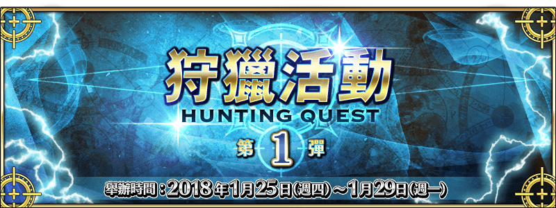

本頁面資訊僅供參考，實際情況請以遊戲內資料為準。
由於直接使用官方翻譯，可能會與其他站內翻譯相異，敬請見諒。
- 骷髏狩獵
-
骷髏．狩獵 開位級 消耗AP 推薦Lv. 初次報酬 開放條件 30 50 31/25 0:00~1/25 23:59 ∞ 職階傾向 QP Exp 絆 
5,400 10,190 515 Wave 1 1  Lv.40 骸骨兵 HP10,090
Lv.40 骸骨兵 HP10,0902 Lv.40 骸骨兵 HP10,090Wave 2 1 Lv.45 骸骨兵 HP22,5572 Lv.45 骸骨兵 HP22,557Wave 3 1 Lv.55 骸骨兵 HP36,3482 Lv.55 骸骨兵 HP36,3483  Lv.50 骸骨之王 HP176,067
Lv.50 骸骨之王 HP176,067掉落總合機率
(可能掉落箱數)33%(6) 83%(4) 16%(1) 100%(7) 骷髏．狩獵 祭位級 消耗AP 推薦Lv. 初次報酬 開放條件 35 75 41/25 0:00~1/25 23:59 ∞ 職階傾向 QP Exp 絆 7,900 25,815 765 Wave 1 1 Lv.55 骸骨兵 HP10,2232 Lv.55 骸骨兵 HP10,223Wave 2 1 Lv.62 骸骨兵 HP43,3022 Lv.62 骸骨兵 HP43,3023 Lv.62 骸骨兵 HP43,302Wave 3 1 Lv.65 骸骨兵 HP77,2442 Lv.62 骸骨之王 HP255,1243 Lv.65 骸骨兵 HP77,244掉落總合機率
(可能掉落箱數)34%(7) 74%(6) 20%(1) 150%(8) 骷髏．狩獵 典位級 消耗AP 推薦Lv. 初次報酬 開放條件 40 90 51/25 0:00~1/25 23:59 ∞ 職階傾向 QP Exp 絆 9,400 38,190 915 Wave 1 1 Lv.60 骸骨兵 HP14,7942 Lv.60 骸骨兵 HP14,7943 Lv.60 骸骨兵 HP14,794Wave 2 1 Lv.70 骸骨兵 HP50,0112 Lv.48 骸骨之王 HP77,4963 Lv.70 骸骨兵 HP50,011Wave 3 1 Lv.71 骸骨之王 HP279,6832 Lv.44 骸骨之王 HP90,4823 Lv.45 骸骨兵 HP65,793掉落總合機率
(可能掉落箱數)24%(6) 104%(8) 24%(1) 200%(9) - 亞馬遜女戰士狩獵
-
亞馬遜女戰士．狩獵 開位級 消耗AP 推薦Lv. 初次報酬 開放條件 30 50 31/26 0:00~1/26 23:59 ∞ 職階傾向 QP Exp 絆 
5,400 10,190 515 Wave 1 1  Lv.35 亞馬遜人 HP9,151
Lv.35 亞馬遜人 HP9,1512 Lv.35 亞馬遜人 HP9,151Wave 2 1 Lv.40 亞馬遜人 HP13,0142 Lv.40 亞馬遜隊長 HP20,1183 Lv.40 亞馬遜隊長 HP20,118Wave 3 1 Lv.55 亞馬遜隊長 HP55,2822 Lv.55 亞馬遜女王 HP183,165掉落總合機率
(可能掉落箱數)60%(6) 66%(4) 21%(1) 40%(4) 75%(3) 亞馬遜女戰士．狩獵 祭位級 消耗AP 推薦Lv. 初次報酬 開放條件 35 75 41/26 0:00~1/26 23:59 ∞ 職階傾向 QP Exp 絆 7,900 25,815 765 Wave 1 1 Lv.50 亞馬遜人 HP11,3362 Lv.50 亞馬遜人 HP11,336Wave 2 1 Lv.50 亞馬遜隊長 HP58,6062 Lv.50 亞馬遜人 HP32,3913 Lv.50 亞馬遜人 HP32,391Wave 3 1 Lv.55 亞馬遜隊長 HP92,1372 Lv.67 亞馬遜女王 HP223,0913 Lv.55 亞馬遜隊長 HP92,137掉落總合機率
(可能掉落箱數)68%(7) 53%(4) 24%(1) 50%(4) 100%(4) 亞馬遜女戰士．狩獵 典位級 消耗AP 推薦Lv. 初次報酬 開放條件 40 90 51/26 0:00~1/26 23:59 ∞ 職階傾向 QP Exp 絆 9,400 38,190 915 Wave 1 1 Lv.50 亞馬遜人 HP14,5752 Lv.50 亞馬遜人 HP14,5753 Lv.50 亞馬遜人 HP14,575Wave 2 1 Lv.50 亞馬遜隊長 HP33,4892 Lv.58 亞馬遜人 HP18,7463 Lv.58 亞馬遜人 HP18,746Wave 3 1 Lv.52 亞馬遜女王 HP121,2862 Lv.75 亞馬遜女王 HP269,8033 Lv.52 亞馬遜女王 HP121,286掉落總合機率
(可能掉落箱數)52%(6) 68%(4) 34%(3) 60%(4) 125%(5) - 雙角獸狩獵
-
雙角獸．狩獵 開位級 消耗AP 推薦Lv. 初次報酬 開放條件 30 50 31/27 0:00~1/27 23:59 ∞ 職階傾向 QP Exp 絆 
5,400 10,190 515 Wave 1 1  Lv.33 人工生命體 HP15,604
Lv.33 人工生命體 HP15,6042 Lv.33 人工生命體 HP15,6043 Lv.33 人工生命體 HP15,604Wave 2 1  Lv.46 雙角獸 HP253,069
Lv.46 雙角獸 HP253,069掉落總合機率
(可能掉落箱數)45%(3) 57.5%(1) 12.5%(1) 45%(3) 30%(1) 雙角獸．狩獵 祭位級 消耗AP 推薦Lv. 初次報酬 開放條件 35 75 41/27 0:00~1/27 23:59 ∞ 職階傾向 QP Exp 絆 7,900 25,815 765 Wave 1 1 Lv.55 人工生命體 HP22,7712 Lv.55 人工生命體 HP22,7713 Lv.55 人工生命體 HP22,771Wave 2 1 Lv.58 雙角獸 HP492,755掉落總合機率
(可能掉落箱數)84%(4) 21%(1) 60%(3) 40%(1) 雙角獸．狩獵 典位級 消耗AP 推薦Lv. 初次報酬 開放條件 40 90 51/27 0:00~1/27 23:59 ∞ 職階傾向 QP Exp 絆 9,400 38,190 915 Wave 1 1 Lv.62 人工生命體 HP29,2942 Lv.62 人工生命體 HP29,2943 Lv.62 人工生命體 HP29,294Wave 2 1 Lv.68 雙角獸 HP581,971掉落總合機率
(可能掉落箱數)95%(4) 30%(1) 75%(3) 50%(1) - 凝視者狩獵
-
凝視者．狩獵 開位級 消耗AP 推薦Lv. 初次報酬 開放條件 30 50 31/28 0:00~1/28 23:59 ∞ 職階傾向 QP Exp 絆 5,400 10,190 515 Wave 1 1 Lv.45 士兵 HP15,0382 Lv.45 士兵 HP15,0383 Lv.45 士兵 HP15,038Wave 2 1 Lv.45 凝視者 HP251,124掉落總合機率
(可能掉落箱數)45%(3) 57.5%(1) 12.5%(1) 90%(3) 30%(1) 凝視者．狩獵 祭位級 消耗AP 推薦Lv. 初次報酬 開放條件 35 75 41/28 0:00~1/28 23:59 ∞ 職階傾向 QP Exp 絆 7,900 25,815 765 Wave 1 1 Lv.70 士兵 HP22,0162 Lv.70 士兵 HP22,0163 Lv.70 士兵 HP22,016Wave 2 1 Lv.57 凝視者 HP477,057掉落總合機率
(可能掉落箱數)84%(4) 21%(1) 120%(3) 40%(1) 凝視者．狩獵 典位級 消耗AP 推薦Lv. 初次報酬 開放條件 40 90 51/28 0:00~1/28 23:59 ∞ 職階傾向 QP Exp 絆 9,400 38,190 915 Wave 1 1 Lv.80 士兵 HP29,6782 Lv.80 士兵 HP29,6783 Lv.80 士兵 HP29,678Wave 2 1 Lv.66 凝視者 HP570,961掉落總合機率
(可能掉落箱數)95%(4) 30%(1) 150%(3) 50%(1) - 守寶妖精狩獵
-
守護者．狩獵 開位級 消耗AP 推薦Lv. 初次報酬 開放條件 30 50 31/29 0:00~1/29 23:59 ∞ 職階傾向 QP Exp 絆 5,400 10,190 515 Wave 1 1 Lv.30 混沌機械兵 HP13,4692 Lv.30 混沌機械兵 HP13,4693 Lv.30 混沌機械兵 HP13,469Wave 2 1  Lv.46 守護者 HP256,922
Lv.46 守護者 HP256,922掉落總合機率
(可能掉落箱數)45%(3) 60%(1) 15%(1) 45%(3) 25%(1) 守護者．狩獵 祭位級 消耗AP 推薦Lv. 初次報酬 開放條件 35 75 41/29 0:00~1/29 23:59 ∞ 職階傾向 QP Exp 絆 7,900 25,815 765 Wave 1 1 Lv.50 混沌機械兵 HP22,3772 Lv.50 混沌機械兵 HP22,3773 Lv.50 混沌機械兵 HP22,377Wave 2 1 Lv.54 守護者 HP459,534掉落總合機率
(可能掉落箱數)88%(4) 25%(1) 60%(3) 32%(1) 守護者．狩獵 典位級 消耗AP 推薦Lv. 初次報酬 開放條件 40 90 51/29 0:00~1/29 23:59 ∞ 職階傾向 QP Exp 絆 9,400 38,190 915 Wave 1 1 Lv.58 混沌機械兵 HP29,6552 Lv.58 混沌機械兵 HP29,6553 Lv.58 混沌機械兵 HP29,655Wave 2 1 Lv.62 守護者 HP560,541掉落總合機率
(可能掉落箱數)100%(4) 35%(1) 75%(3) 40%(1)